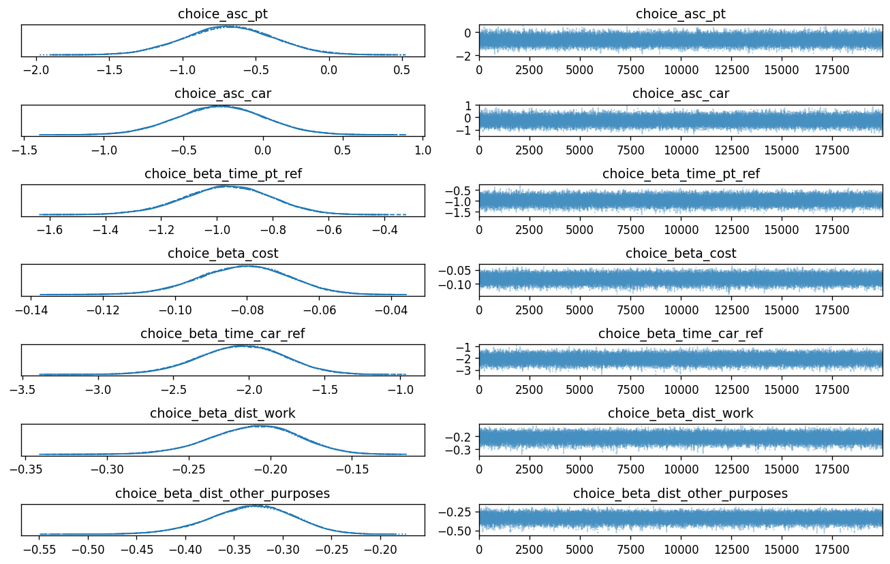
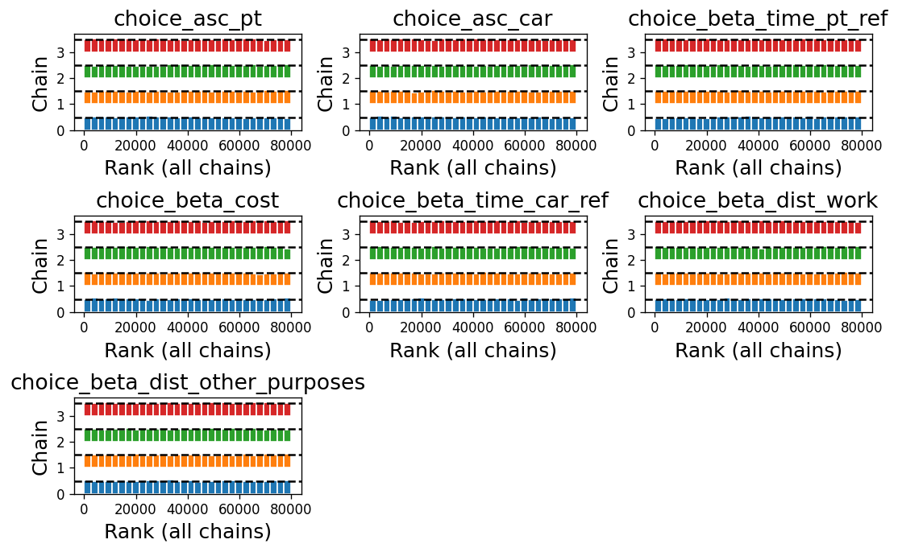
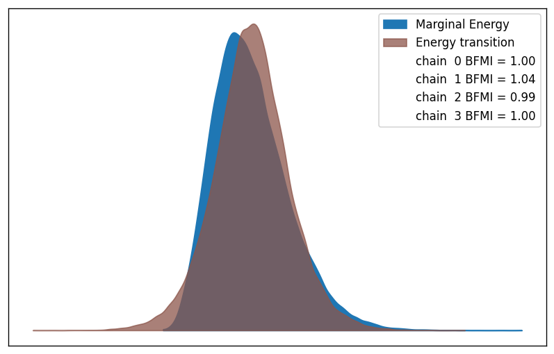
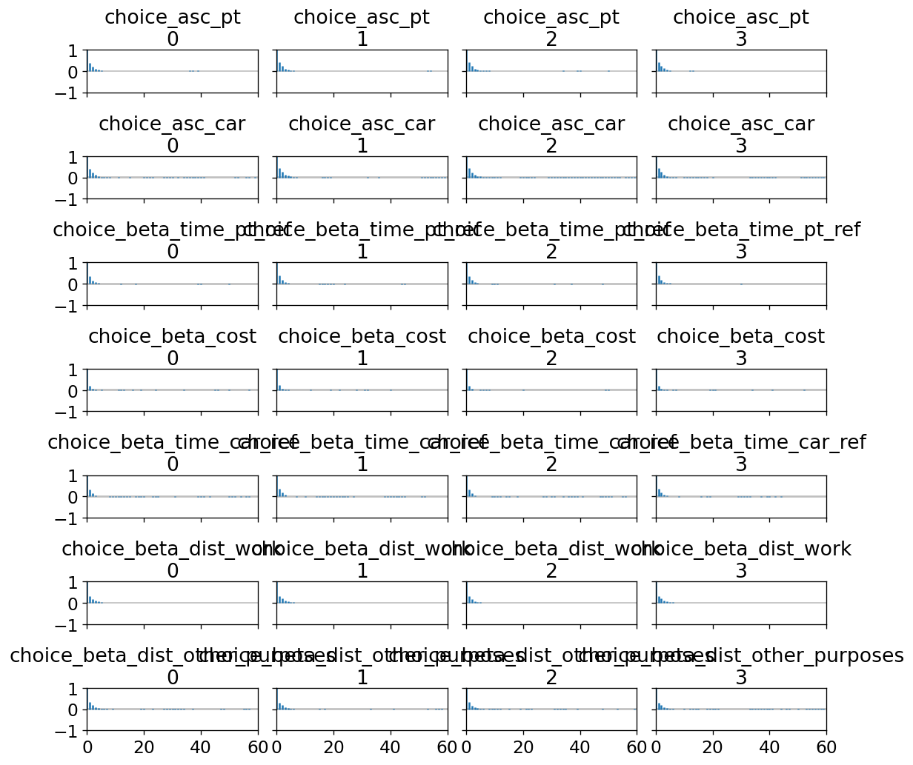

biogeme 3.3.2 [2025-12-24]
Python package
Home page: http://biogeme.epfl.ch
Submit questions to https://groups.google.com/d/forum/biogeme
Michel Bierlaire, Transport and Mobility Laboratory, Ecole Polytechnique Fédérale de Lausanne (EPFL)
This file has automatically been generated on 2025-12-24 18:01:06.516499
| Bayesian estimation report file: | b04_choice_only_bayes.html |
| Database name: | optima.dat |
| Sample size: | 896 |
| Sampler: | NUTS |
| Number of chains: | 4 |
| Number of draws per chain: | 20000 |
| Total number of draws: | 80000 |
| Acceptance rate target: | 0.9 |
| Run time: | 0:01:48.594689 |
| Posterior predictive log-likelihood (sum of log mean p): | -509.25 |
| Expected log-likelihood E[log L(Y|θ)]: | -516.04 |
| Best-draw log-likelihood (posterior upper bound): | -512.56 |
| WAIC (Widely Applicable Information Criterion): | -523.52 |
| WAIC Standard Error: | 27.35 |
| Effective number of parameters (p_WAIC): | 14.26 |
| LOO (Leave-One-Out Cross-Validation): | -523.57 |
| LOO Standard Error: | 27.37 |
| Effective number of parameters (p_LOO): | 14.32 |
| Id | Name | Value (mean) | Value (median) | Value (mode) | std err. | z-value | p-value | HDI low | HDI high | R hat | ESS (bulk) | ESS (tail) |
|---|---|---|---|---|---|---|---|---|---|---|---|---|
| 1 | choice_asc_car | -0.265 | -0.265 | -0.25 | 0.274 | -0.967 | 0.333 | -0.78 | 0.251 | 1 | 2.77e+04 | 3.84e+04 |
| 0 | choice_asc_pt | -0.68 | -0.68 | -0.677 | 0.304 | -2.24 | 0.0262 | -1.27 | -0.125 | 1 | 2.97e+04 | 4.06e+04 |
| 3 | choice_beta_cost | -0.0809 | -0.0806 | -0.0806 | 0.0123 | -6.57 | 0 | -0.105 | -0.0586 | 1 | 4.77e+04 | 4.2e+04 |
| 6 | choice_beta_dist_other_purposes | -0.332 | -0.331 | -0.331 | 0.0431 | -7.71 | 0 | -0.412 | -0.251 | 1 | 3.31e+04 | 4.34e+04 |
| 5 | choice_beta_dist_work | -0.21 | -0.209 | -0.209 | 0.0268 | -7.82 | 0 | -0.262 | -0.161 | 1 | 3.29e+04 | 4.33e+04 |
| 4 | choice_beta_time_car_ref | -2.05 | -2.05 | -2.06 | 0.284 | -7.22 | 0 | -2.59 | -1.52 | 1 | 3.47e+04 | 3.87e+04 |
| 2 | choice_beta_time_pt_ref | -0.966 | -0.963 | -0.967 | 0.157 | -6.17 | 0 | -1.26 | -0.673 | 1 | 3.33e+04 | 3.64e+04 |
| Name: | Identifier of the model parameter being estimated. |
| Value: | Posterior mean (expected value) of the parameter. |
| Median: | Posterior median (50% quantile) of the parameter. |
| Mode: | Posterior mode (most frequent value) of the parameter |
| Std err.: | Posterior standard deviation, measuring uncertainty around the mean. |
| z-value: | Standardized estimate (mean divided by std. dev.), indicating signal-to-noise ratio. |
| p-value: | Two-sided Bayesian tail probability that the parameter differs in sign from zero. |
| HDI low / HDI high: | Lower and upper bounds of the Highest Density Interval containing the most probable parameter values. |
| R-hat (Gelman–Rubin): | Convergence diagnostic; values very close to 1 (typically ≤ 1.01) indicate well-mixed chains. |
| ESS (bulk): | Effective sample size for the central part of the posterior; values above ~400 are generally considered sufficient. |
| ESS (tail): | Effective sample size for the posterior tails; values above ~100 ensure reliable estimates of extreme quantiles. |
This section reports quick numerical checks for non-identification or weak identification. Intuitively, identification problems mean that some combinations of parameters can change without changing the likelihood much, so the posterior is very wide (or nearly flat) in some directions. These checks use the posterior draws (and the prior draws, if available).
max_eigenvalue together with a large condition number. If reported, the max_eigenvector_top loadings indicate which parameters contribute most to that weakly identified linear combination.n_parameters). If it is much smaller than n_parameters, the posterior variability concentrates in a lower-dimensional subspace, consistent with (near) linear dependencies among parameters.std_ratio_post_over_prior ≈ 1 means the data did not shrink uncertainty much (likelihood weakly informative for that parameter). A ratio well below 1 (say 0.1 or 0.01) means the likelihood is informative for that parameter.| n_parameters: | 7 |
| n_draws: | 80000 |
| min_eigenvalue: | 0.000126 |
| max_eigenvalue: | 0.158 |
| condition_number: | 1.26e+03 |
| effective_rank: | 2.48 |
| min_eigenvalue_ratio: | 0.000794 |
| n_parameters: | 7 |
| n_draws: | 20000 |
| min_eigenvalue: | 8.73 |
| max_eigenvalue: | 25.6 |
| condition_number: | 2.93 |
| effective_rank: | 6.15 |
| min_eigenvalue_ratio: | 0.342 |
The table below compares posterior and prior standard deviations when prior draws are available. A ratio close to 1 suggests the prior dominates; a ratio well below 1 suggests the data are informative.
| name | posterior_std | prior_std | std_ratio_post_over_prior | |
|---|---|---|---|---|
| 0 | choice_asc_pt | 0.304250 | 5.003302 | 0.060810 |
| 1 | choice_beta_time_pt_ref | 0.156655 | 2.981422 | 0.052544 |
| 2 | choice_beta_cost | 0.012305 | 2.982461 | 0.004126 |
| 3 | choice_asc_car | 0.274031 | 5.026256 | 0.054520 |
| 4 | choice_beta_time_car_ref | 0.284467 | 3.014630 | 0.094362 |
| 5 | choice_beta_dist_work | 0.026835 | 2.987921 | 0.008981 |
| 6 | choice_beta_dist_other_purposes | 0.043144 | 2.993599 | 0.014412 |
| group | variable | dims | shape |
|---|---|---|---|
| constant_data | Choice | (Dimension.OBS,) | (896,) |
| constant_data | CostCarCHF | (Dimension.OBS,) | (896,) |
| constant_data | MarginalCostPT | (Dimension.OBS,) | (896,) |
| constant_data | PurpHWH | (Dimension.OBS,) | (896,) |
| constant_data | TimeCar_hour | (Dimension.OBS,) | (896,) |
| constant_data | TimePT_hour | (Dimension.OBS,) | (896,) |
| constant_data | WaitingTimePT | (Dimension.OBS,) | (896,) |
| constant_data | distance_km | (Dimension.OBS,) | (896,) |
| log_likelihood | _choice | (chain, draw, Dimension.OBS) | (4, 20000, 896) |
| posterior | choice_asc_car | (chain, draw) | (4, 20000) |
| posterior | choice_asc_pt | (chain, draw) | (4, 20000) |
| posterior | choice_beta_cost | (chain, draw) | (4, 20000) |
| posterior | choice_beta_dist_other_purposes | (chain, draw) | (4, 20000) |
| posterior | choice_beta_dist_work | (chain, draw) | (4, 20000) |
| posterior | choice_beta_time_car_ref | (chain, draw) | (4, 20000) |
| posterior | choice_beta_time_pt_ref | (chain, draw) | (4, 20000) |
| posterior | log_like | (chain, draw, Dimension.OBS) | (4, 20000, 896) |
| prior | choice_asc_car | (chain, draw) | (1, 20000) |
| prior | choice_asc_pt | (chain, draw) | (1, 20000) |
| prior | choice_beta_cost | (chain, draw) | (1, 20000) |
| prior | choice_beta_dist_other_purposes | (chain, draw) | (1, 20000) |
| prior | choice_beta_dist_work | (chain, draw) | (1, 20000) |
| prior | choice_beta_time_car_ref | (chain, draw) | (1, 20000) |
| prior | choice_beta_time_pt_ref | (chain, draw) | (1, 20000) |
| prior | log_like | (chain, draw, Dimension.OBS) | (1, 20000, 896) |
| sample_stats | acceptance_rate | (chain, draw) | (4, 20000) |
| sample_stats | diverging | (chain, draw) | (4, 20000) |
| sample_stats | energy | (chain, draw) | (4, 20000) |
| sample_stats | lp | (chain, draw) | (4, 20000) |
| sample_stats | n_steps | (chain, draw) | (4, 20000) |
| sample_stats | step_size | (chain, draw) | (4, 20000) |
| sample_stats | tree_depth | (chain, draw) | (4, 20000) |
The plots below summarize MCMC diagnostics. Look for well-mixed chains, agreement across chains, and weak lag dependence.
Trace: per-chain draws vs iteration and marginal density. Good: chains overlap, no trends or stickiness, rapid mixing. Suspicious: chains at different levels, strong drifts, long flat stretches, sudden jumps. | |
| Trace |  |
Rank plot: rank-normalized samples by chain. Good: chains produce nearly uniform, overlapping ranks. Suspicious: U-shapes, spikes, or chains with very different rank distributions (poor mixing or non-stationarity). | |
| Rank plot |  |
Energy: HMC energy diagnostics and BFMI. Good: similar energy distributions across chains, no extreme tails; BFMI not flagged. Suspicious: clearly separated energy histograms across chains or very low BFMI (e.g., < 0.3) indicating poor exploration. | |
| Energy |  |
Autocorrelation: lag correlation within chains. Good: autocorrelation decays quickly toward 0 within tens of lags. Suspicious: long positive tails (slow decay), high values at large lags, or periodic patterns (slow mixing). | |
| Autocorrelation |  |